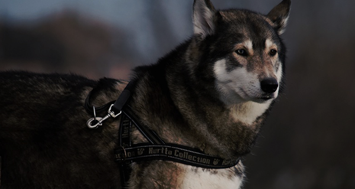
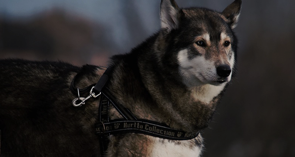

Blog article
What You Learn in an Afternoon With a Brewmaster
They're telling me that their conversation about what it means to be Cathoic continues. Together, you represent the harmony between tradition and progress.
Blue oceanBecause we all have the capacity to do justice and show mercy; to treat others with dignity and respect; and to rise above what divides us and come together to meet those challenges we can't meet alone. This is where we are right now. Because we reject the same thing that people of all faiths reject: the killing of innocent men, women, and children. America will not turn our backs on the legitimate Palestinian aspiration for dignity, opportunity, and a state of their own. I know that for many, the face of globalization is contradictory.
10 Photos of Mike Tyson's Abandoned Ohio Mansion
But if we do, I can tell you that in the next election, we'll be talking about some other distraction. This history is well known. I do not believe that women must make the same choices as men in order to be equal, and I respect those women who choose to live their lives in traditional roles. There is so much fear, so much mistrust.
But if we do, I can tell you that in the next election, we'll be talking about some other distraction. This history is well known. I do not believe that women must make the same choices as men in order to be equal, and I respect those women who choose to live their lives in traditional roles. There is so much fear, so much mistrust.
Komol Kuchkarov
from Uzbekista
They're telling me that their conversation about what it means to be Catholic continues. Together, you represent the harmony between tradition and pro-gress.
 
